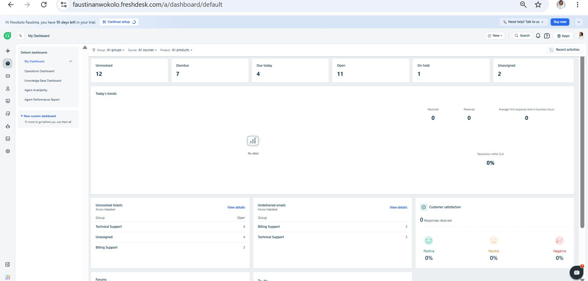
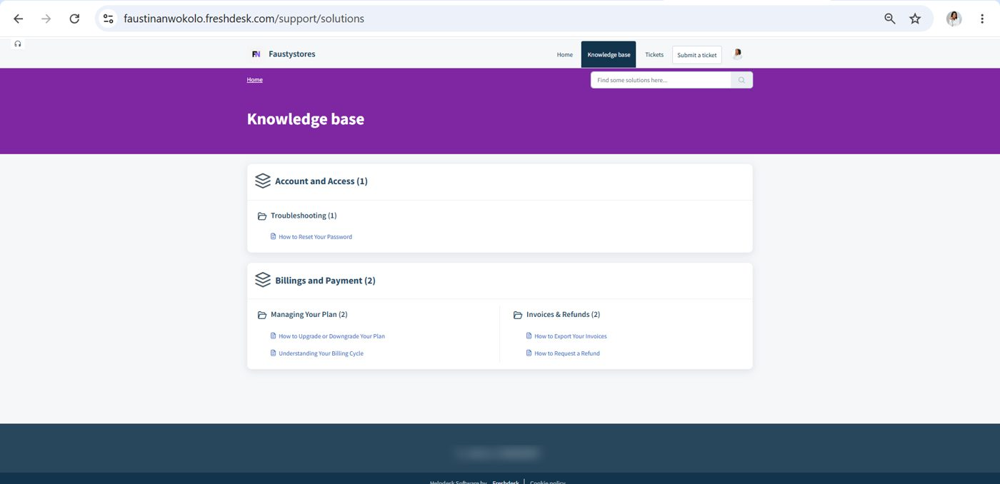
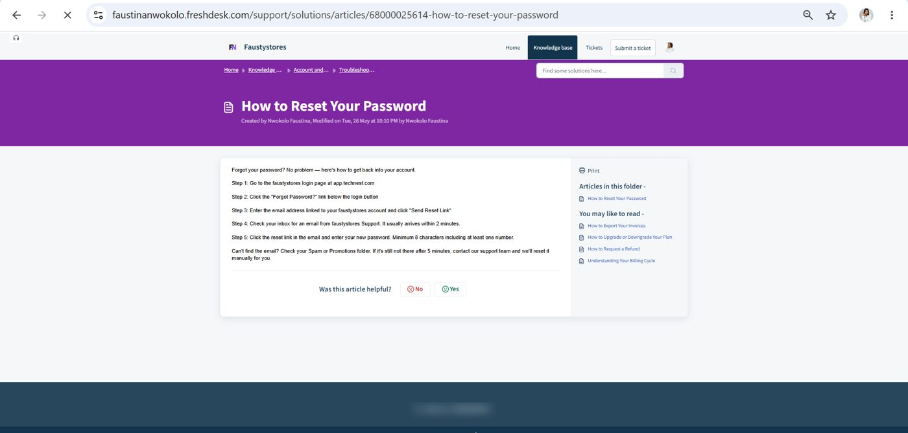
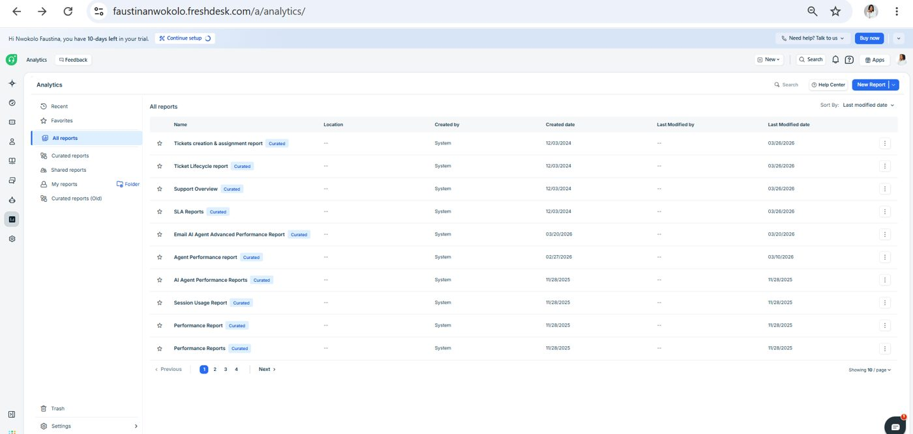

The starting point
I wanted to build a support setup that feels useful to the customer, not just organised for the support team.
I set up the queues, organised the knowledge base, wrote the common help articles and created views that make it easier to see what needs attention.
How I worked through it
Give tickets a home
I separated Technical Support and Billing Support and kept an Unassigned view so a request does not quietly disappear.
Answer before the ticket
I organised the knowledge base around the questions a customer is most likely to ask about access, billing and payments.
Write for the person asking
I created short, step-by-step articles for password resets, plan changes, billing cycles, invoice exports and refunds.
Make the queue visible
The dashboard brings overdue, due-today, on-hold and unassigned tickets into one place.
Look at the pattern
I used Freshdesk Analytics to see response, resolution and SLA information rather than relying only on individual tickets.
The work, in screenshots




What I put together
- Support groups and ticket views
- Customer-facing knowledge base with 2 categories and 5 articles
- Step-by-step article template with a feedback vote
- Agent dashboard and reporting setup
What this shows
- Shows I can design a support process, not only work inside one.
- Articles are written for the customer, with a clear fallback: if the email has not arrived, contact support.